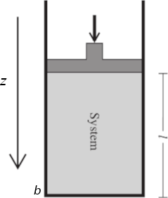

The general expression for work
The definition of work we give in thermodynamics is the same definition used in physics. When part of the surroundings exerts a macroscopically measurable force F on matter in the system while this matter moves a distance dz at the point of application of F, then the surroundings has done work
δw = Fz dz.
F may be a mechanical, electrical, or magnetic force and may act on and displace the entire system or only a part of the system. When Fz and the displacement dz are in the same direction, positive work is done on the system: δw > 0. When Fz and dz are in opposite directions, δw is negative.
P-V work
Now consider the arrangement shown in the figure above, in which one wall of a system is a massless, frictionless, rigid, perfectly fitting piston of cross-sectional area A. If the external pressure is Pext, the magnitude of the force acting on the outer face of the piston is F = Pext A. When the system expands through a distance dz against an external pressure Pext, it follows that the work done on the system is
δw = PextA dz. (1.0)
The system has cross-sectional area A and length l = b − x, where z is the piston’s position and b is the position of the fixed end of the system. The volume of this cylindrical system is V = Al = Ab − Az. The change in system volume when the piston moves by dz is dV = d(Ab − Az) = −A dz. Equation (1.0) becomes
dw = −Pext dV
To obtain the total work done when the volume changes from V1 to V2 we integrate this expression between the initial and final volumes:
In a contraction of the system's volume (ΔV < 0), the work done on the system is positive (w > 0). When the work is performed by the system on the surroundings, there is an expansion (ΔV > 0) of the system's volume, the work by the system is negative (w < 0).
Free expansion
By free expansion we mean expansion against zero opposing force. It occurs when Pext = 0. According to Eq. 1.0, δw = 0 for each stage of the expansion. Hence, overall:
w = 0
Reversible expansion
A reversible change in thermodynamics is a change that can be reversed by an infinitesimal modification of a variable. A reversible process is obviously an idealization. The key word ‘infinitesimal’ sharpens the everyday meaning of the word ‘reversible’ as something that can change direction. We say that a system is in equilibrium with its surroundings if an infinitesimal change in the conditions in opposite directions results in opposite changes in its state. One example of reversibility that we have encountered already is the thermal equilibrium of two systems with the same temperature. The transfer of energy as heat between the two is reversible because, if the temperature of either system is lowered infinitesimally, then energy flows into the system with the lower temperature. If the temperature of either system at thermal equilibrium is raised infinitesimally, then energy flows out of the hotter system.
To achieve reversible expansion we set pex equal to P at each stage of the expansion. In practice, this equalization could be achieved by gradually removing weights from the piston so that the downward force due to the weights always matched the changing upward force due to the pressure of the gas. When we set Pext = P, eqn 1 becomes
δwrev = −Pext dV = −PdV
the total work done during the reversible expansion is thus
Reversible isothermal expansion of a perfect gas
Consider the isothermal, compression of a perfect gas. The expansion is made isothermal by keeping the system in thermal contact with its surroundings (which may be a constant-temperature bath). The process is reversible only when Pext and P of the gas differ only infinitesimally: the process could be reversed (from compression to expansion) by decreasing the external pressure infinitesimally. Because the equation of state is PV = nRT, we know that at each stage P = nRT/V, with V the volume at that stage of the expansion. The temperature T is constant in an isothermal expansion, so (together with n and R) it may be taken outside the integral. It follows that the work of reversible isothermal expansion of a perfect gas from Vi to Vf at a temperature T is
When the final volume is greater than the initial volume, as in an expansion, the logarithm in eqn is positive and hence w < 0. In this case, the system has done work on the surroundings and the internal energy of the system has decreased as a result.
More work is obtained when the expansion is reversible (the area is greater) because matching the external pressure to the internal pressure at each stage of the process ensures that none of the system’s pushing power is wasted. The maximum work of expansion is equal to the minimum work of compression. We shall explain this fact with the production of entropia in a irreversible process.